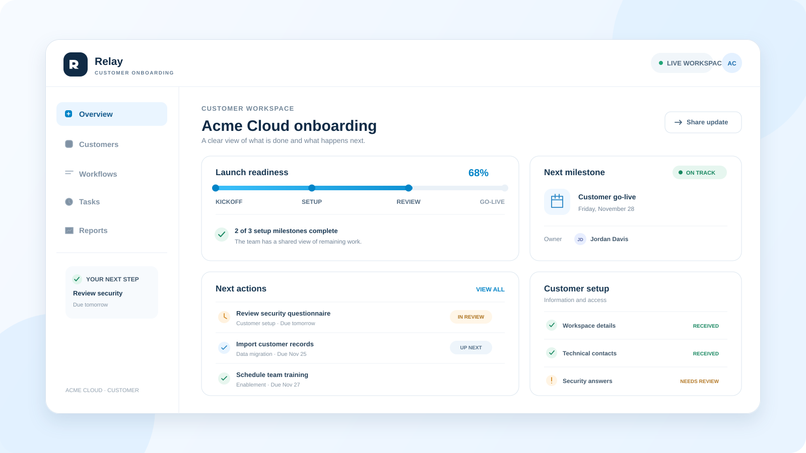
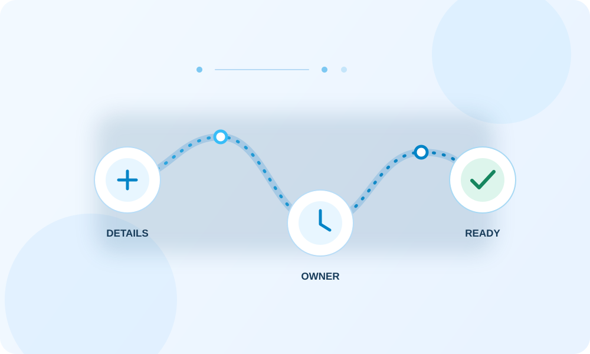
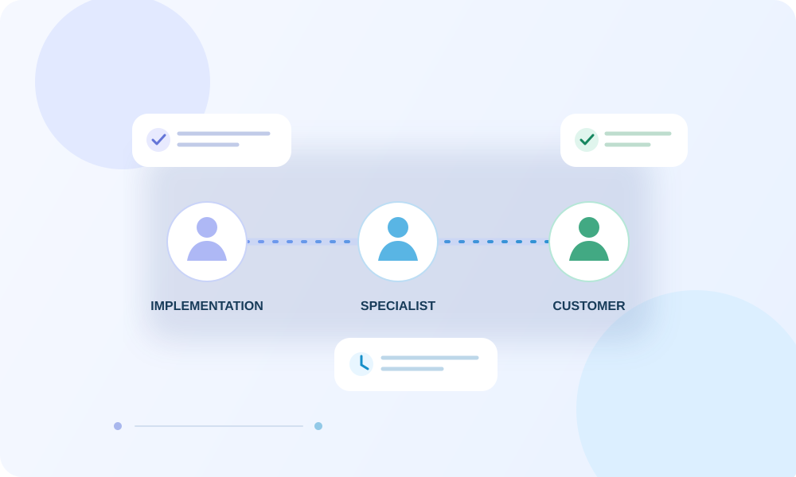
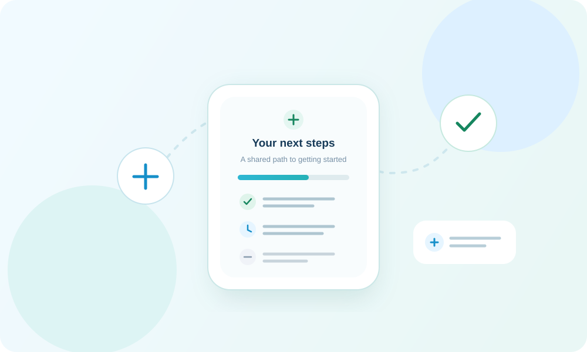
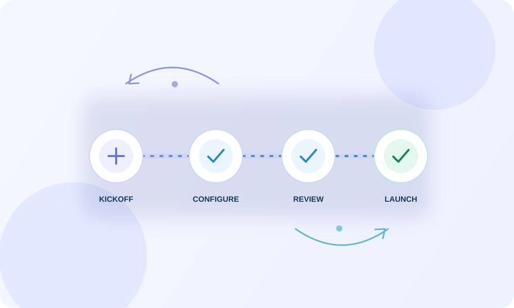

Missing setup details hold up work
Give each customer contact a personal, expiring portal link to answer requests, ask questions, and share onboarding files.
Relay Automation · the team behind Relay

Relay is Relay Automation’s B2B SaaS customer onboarding workspace. It brings process maps, reusable templates, customer work, delivery tracking, and launch readiness together so teams can see what needs to happen from kickoff to go-live.
Explore a pre-loaded workspace with fictional records. Changes stay in this browser.
A clearer path from kickoff to launch
Purpose-made illustrations show how Relay connects setup requests, team ownership, and customer progress.




Where onboarding gets stuck
Relay helps customer onboarding teams make the next step visible to both the team and the customer.
Give each customer contact a personal, expiring portal link to answer requests, ask questions, and share onboarding files.
Keep task owners, due dates, prerequisites, and blockers beside each customer implementation.
Share a target launch date, review blockers, approvals, SOW scope, stage gates, and overdue tasks.
Save a checked onboarding process as a template and reuse its tasks for consistent customer implementations.
Optional integration
After an owner configures one HubSpot pipeline, its Closed Won stage, and a Relay template, matching newly won deals can start one Relay implementation. Relay also sends progress summaries to a separate HubSpot onboarding deal; it does not modify the original sales deal or import unrelated CRM records. Customers use Relay’s secure portal and do not need HubSpot.
Founder of Relay Automation
Customer onboarding can break down between a signed contract and go-live when setup details, task owners, and prerequisites are scattered across emails and spreadsheets. Mohamed Shajith founded Relay Automation and built Relay to bring reusable workflows, customer responses, and readiness gaps into one workspace.
Read Mohamed Shajith’s founder profile
Mohamed Shajith LinkedIn
Relay is early-stage. We don't publish customer logos, testimonials, or quantified results without permission and verification.
Explore Relay's interactive sample workspace, built with fictional records.